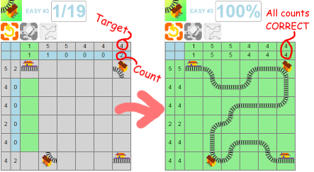
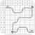

Trakdoku
Instructions:
Just click on the squares.
The puzzle is solved when:
- your track connects between the two stations on the edges
- via all stations in between (if any)
- and the counts of the tracks in each row and column match the required numbers.
The picture below shows the solution to 'EASY #3':

UNDO - click this to step backwards through changes you've made to the puzzle.
ERASE - this toggles on (green) and off (gray). While enabled, clicking on any
puzzle piece will remove it.

ANSWER - this toggles on (green) and off (gray) to display the puzzle answer.